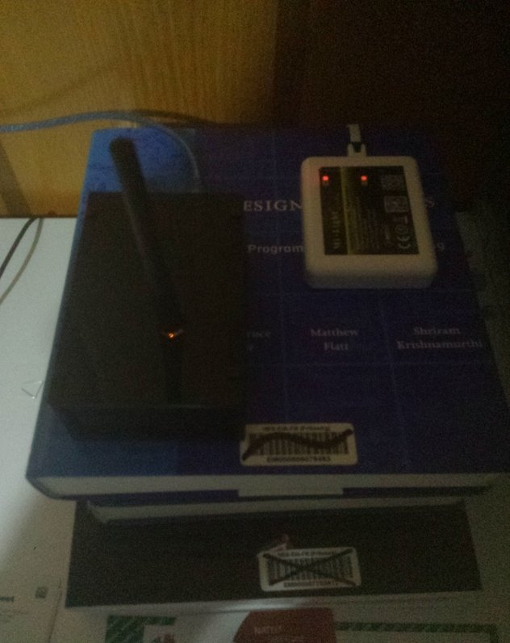
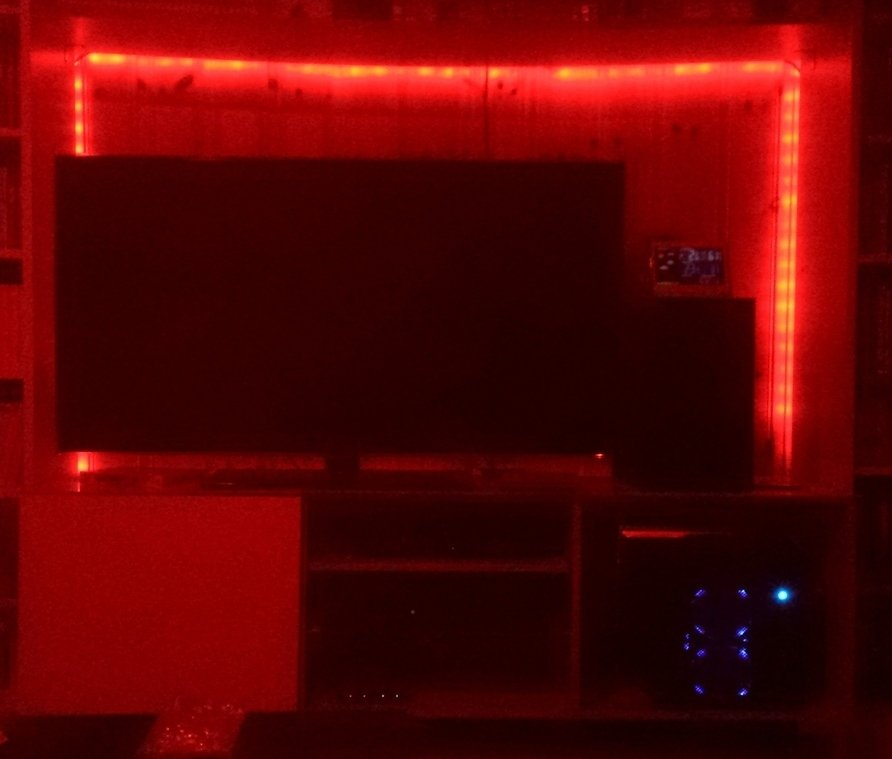

Add Milight smart lights to my Domoticz home automation system
Recently, I switched from my hand crafted home automation system to Domoticz. This allows me to easily integrate new smart devices and remote controllable peripherals without much effort. I plan to relate my effort in having fun controlling my home :)
I'm now able to control lights in two rooms with Domoticz. The most well-known smart bulbs are the Philips Hue. However, they are stupidly expensive. There are a lot of alternatives. I've ordered some Milight light bulbs and controller to test with Domoticz. I didn't order a lot of them because I wanted to make sure they would work with my system. Milight system is working over Wifi. There are several components to a Milight system:
- The LED Light Bulbs with Red/Green/Blue/White channels
- The Wifi Controller that is able to control 4 zones
- An RGBW Controller for LED strip
The first two are necessary for any installation, the third is to control an RGBW LED strip. This list is not exhaustive, it's only the components that I have used. It is important to note that a single Wifi controller can only control 4 zones. There are also remotes, but I have not bought one since I plan to use them only from Domoticz and maybe smartphone.
The installation of the controller is relatively easy. You need to download the Milight 2.0 application on the Android Play Store (or the equivalent for IOS). Then, you can power on the Wifi Controller. It'll create a new Wifi on which you can then connect on your phone. Then, you can use the application on your phone to configure the device and make it connect to your home wireless network. Once, this is done, you can connect your phone back to your home network. You can then use the Milight application to configure your device. I highly recommend to set a static IP address to the controller. The way I did it is simply to set a fixed IP address on my DHCP server based on the MAC address of the MAC controller but you can simply do the configuration in the application or in the web interface of the controller (the user and password combination is admin:admin).
Here is the look of the controller (next to my RFLink):
(My phone is starting to die, hence the very bad quality of images)
You can then install your LED light bulbs. For, open first the remote on your Android Milight application. Then plug the light bulb without power first. Then power on the light and press once on one of the I buttons on one of the zones on the remote. This will link the LED to the selected zone on the controller. You can then control the light from your phone. Remember, only four zones and therefore four lights per controller.
The installation for a LED strip is not much complicated. You need to plug the 4 wires (or 5 wires if your have an actual RGBW LED) into the corresponding inputs on the controller. Then, you power it and you can link it to a zone like a normal light bulb!
It works really well and directly without problems.
The last step is of course to configure your controller in Domoticz. It is really easy to do. You need to add a new hardware of each of the Milight controller. It is listed under the name "Limitless/AppLamp/Mi Light with LAN/WiFi interface". You then can set the IP address and the port by default is 8899. Once you did configure the hardware, you'll see new devices appear in the Devices list. There will one device for each zone and one device to control all four zones at once. You can add the device you already configured as switches. From the Switches interface you can turn the lamp on and off and you can

You can then put them on your floor plan or control them from your rules.
So far, I'm pretty satisfied with this Milight system. The Android application is of poor quality but aside from this is pretty good and the price is very fair. I'm also really satisfied with the Domoticz support. The only that is sad is that the Domoticz Android application does not support RGBW control of the lamps, only on and off, but that is already cool.
Now that all of this is working well, I've ordered a few more light bulbs to cover all my rooms and a few LED controller to control (and install first) the other LEDS that I have in mind.
On another note, I've also added a new outside temperature sensor outside my apartment. It is a very cheap Chinese sensor, bought on Ebay, based on the XT200 system that is working very well with RFLink.
The next step in my system is probably to integrate Voice Control, but I don't know exactly which way I'll go. I ordered a simple microphone that I intend to plug on my spare Raspberry Pi, but I don't know if the range will be enough to cover a room. Ideally, I would like to use an Amazon Dot, but they are not available in Switzerland. I'll probably write more on the subject once I've found an adequate solution. Another idea I've is to integrate support for ZWave via OpenZWave and then add a few more cool sensors that I haven't found on an cheaper system.
I hope this is interesting and don't hesitate if you have any question about my home automation project. You can expect a few more posts about this as soon as In improve it :)
Comments
Comments powered by Disqus